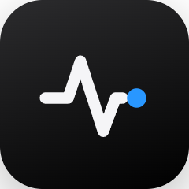

Your music,on the big screen.
OZBEAT shows what your PC or BluOS speakers are playing, with artwork, synced lyrics and visuals that move with the music.
Anything on your PC
Spotify, your browser or any app in the Windows media controls.
BluOS speakers
Bluesound players on your network are found automatically.
Synced lyrics
Line by line, in time with the song.
Artwork background
The blurred cover flows behind everything, in the song's own colors.
Two screens
Press Ctrl+D. The cover stays on your monitor and the lyrics go big on the TV or second screen.


If Windows SmartScreen warns you, click More info and then Run anyway. The app isn't code-signed yet.